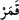
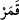
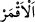

aydınlatan her şeye bu isim verilmiştir. Burada kasdedilen Güneş’tir. Çünkü Allah
Teâlâ: “....Güneşi de bir lamba yaptı” (Nûh, 71/16) buyurmuştur. Güneş ve büyük
yıldızlar ışık saçma ve aydınlatma bakımından kandillere ve lambalara benzetilmiştir.
Nitekim Allah Teâlâ: “Andolsun biz en yakın göğü lambalarla donattık...” (el-Mülk,
67/5) buyurmuştur.
Ay’a üç güne kadar “hilâl”, üç günden sonra “ denir. el-Muhtâr’da geçtiği üzere
beyaz olduğu için Ay’a “ adı verilmiştir. Keşfü’l-esrâr’da belirtildiğine göre ise Ay
ile yeryüzü beyazladığı için bu isim verilmiştir. “ beyaz demektir.
Keşfü’l-esrâr’da der ki: “Âsuman/gökyüzünden murâd, Kur’an semâsıdır. Çünkü
bütün inananlar onun beyanının gölgesi altındadır. Kur’an’dan her bir sûre, burç gibidir.
Sûretler âleminde yedi esas vardır (seb’a-i seyyâre gibi). Sûreler âleminde (Kur’an) de
“tekrarlanan yedi (es-seb‘u’l-mesânî)” vardır. Gece vakti yıldıza bakanların yolunu
kaybetmediği gibi, bir kimse fitne karanlığında şek ve şüphe korkusundan gönül gözünü,
yıldızlara benzeyen Kur’an âyetlerine çevirirse, din yolunu kaybetmez.”
Nefâisü’l-mecâlis’te ise şöyle der: “Âyette Allah’ın kudretinin kemâline delâlet
vardır. Çünkü bu büyük cisimler, etrafa ışık saçan ve aydınlatan varlıklar, sırf O’nun
kudretinin eserlerindendir.”
Bilesin ki Allah Teâlâ, senin nefsinin semâsında hislerin/duyu organlarının burçlarını
yarattı. Orada ruhânî nurlarla ışık saçan ruh güneşini ve kalb ayını var etti. Şu halde
sana düşen vücûdunu aydınlatmak için çalışıp gayret etmek ve kalbini nefsâniyet
karanlıklarından kurtarmaktır. Bu şekilde tecellî nurlarını almaya kabiliyet kazanır ve
mâsivâ zulmetinden kurtulursun. Böylece en yüce maksada vâsıl olur, fenâdan sonra
bakâyı elde eder, fakrdan sonra zenginliğin kemâlini bulur, orada Melik ve Kâdir olan
Allah’ın kudretinin kemalini müşâhede edersin.
Arâisü’l-Kur’ân’da der ki: “Semânın burçları güneş ve ayın yörüngeleridir. Bunlar da
koç, boğa ve diğerleridir. Kalbde de burçlar vardır. Bunlar îmân, ma‘rifet, akıl, yakîn,
İslâm, ihsân, tevekkül, havf, recâ, muhabbet, şevk ve veleh burçlarıdır. İşte kalbin salahı
bu on iki burcun devamı iledir. Nitekim koç ve diğer on iki burç da şu fânî alemin ve
halkının salahının sebebidir. Semâda güneş kandili ve ay ışığı vardır. Kalbde ise îman
ve ikrar kandili, ma‘rifet ayı vardır. Îman ve ma‘rifet nûru dilde zikrullah ile, gözlerde
ibret ile, âzâlarda tâat ve hizmet ile parlar.”
et-Te’vîlâtû’n-Necmiyye’de der ki: “Âyet kalblerin semâsına, menzillerin ve
makamların burçlarına işâret etmektedir. Bunlar on iki menzildir: Tevbe, zühd, havf,
reca, tevekkül, sabır, şükür, yakîn, ihlâs, teslim, tefvîz ve rızâ. İşte bunlar ahval
gezegenlerinin menzilleridir. Tecellî güneşi, müşâhede ayı, şevk zühresi, muhabbet
müşterisi, keşfler utaridi, fenâ merihi ve bakâ zuhâli bu menzillerdendir.
Kim can u gönülden gökteki burçları seyretmek isterse
Göklere Îsâ gibi yükselir
Semâda miraca giden yol vardır